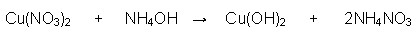

Unit 2: Chemical Reactions
Activity 2: Matter and Chemical Reactions
Content
Balancing Equations (continued)
This is the fun part!
And if it’s not fun for you, then try to think of it as a challenge.
To start our mini-journey, let’s use some of the earlier skeletal equations from this activity and add some new ones. Pretend you are a doctor and you need to find the right balance between the reactant side and the product side.
Be aware of the following:
- The arrow is the boundary between the reactants and the products;
- To change any amounts of an element’s atoms, you only change the coefficients;
- Work with one element at a time and start with either the product side or the reactant side.
GOOD LUCK!
Here is your first case, doctor:
The skeletal equation is as follows:
- Decide which element you want to balance first.
- On quick inspection, notice that there are 2 hydrogen atoms on the reactant side and 2 hydrogen atoms on the product side. Looks good.
- However, there is 1oxygen on the reactant side and 2 on the product side. You need to balance the oxygens.
- Water contains 1 oxygen atom. Change the coefficient for water to “2”
- The reaction looks like this now:
- Take a quick inventory of the atoms’ numbers;
- On the reactant side
There are now 4 hydrogen atoms and 2 oxygen atoms;
- On the product side:
There are now 2 hydrogen atoms and 2 oxygen atoms.
The equation is NOT balanced!
- No worries. Go back to balance the hydrogen atoms.
- Write a “2” in front of the H2 to balance with the four hydrogen atoms on the reactant side;
- The equation should look like this:
- Take another inventory of the atoms’ numbers;
- On the reactant side:
There are 4 hydrogen atoms and 2 oxygen atoms.
- On the product side:
There are 4 hydrogen atoms and 2 oxygen atoms.
It’s balanced!
Remember:
- All of the steps shown to get to the final answer represent your thinking process. You will find that sometimes the eraser or the delete key will come in handy when you are attempting to balance equations.
- Your mission, in the end, is to balance the equation. How you get there is up to you. If you approach the balancing process in your own way, then that’s great.
Here is your second case, doctor:
In this case, you will be balancing ionic equations with polyatomic ions that stay together on each side of the “arrow”.
Let’s balance the following reaction:
Notice that the equation contains the following polyatomic ions:
*****Note: These polyatomic ions have charges. But, they are not shown in this case nor any subsequent mentions in order to minimize any distractions.*****
Back to the skeletal equation:
Approach the balancing act by first balancing each polyatomic “package”.
Starting with the nitrate, NO3, the product side shows 2 nitrates and so place “2” in front of the NH4NO3 compound on the product side. You now have the following:

There are now 2 ammonia ions, NH4, on the product side and 1 ammonia ion on the reactant side. You need to balance the ammonias.
Place a 2 in front of the NH4OH on the reactant side. You now have the following:
On quick inspection, the ammonias are balanced and so are the nitrates. Keep going. You still have the hydroxide, OH, ion to balance and the copper, Cu, too.
Look closely at the coppers. They are already balanced. Now, take a look at the hydroxides, OH. What do you notice? They are balanced, too!
IT’S BALANCED!
Here is your third case, doctor:
This is a special case. The equation involves the burning of compounds with carbon, hydrogen and sometimes oxygen in the compound. Burning means that the compound is reacting with oxygen gas, O2. The products will be carbon dioxide and water.
Balance the following skeletal equation:
Here we go.
- Balance the carbon atoms first. Place a “4” in front of the CO2 on the product side. You now have the following:
- Balance the hydrogen atoms, next. Place a “5” in front of H2O on the product side. You now have the following:
- The hydrogen atoms are balanced.
- The last atom to balance is the oxygen atom.
- Count the number of oxygen atoms on the product side. There are 4x2 + 5x1 oxygen atoms on the product side. The total is 13.
- Do you see a problem?
- Placing a “13” in front of the O2 on the reactant side gives you a total of 26 oxygen atoms on the reactant side. This is not good.
- Don’t despair!
- Place a 13 in front of the O2 and you get the following:
- This next part is the trick to the balancing act. Divide the 13 by 2. Are you still here? It now looks like this:
- Fractions in a balanced equation are not good form. What do you think you should do cancel out the 2 in the fraction? If you are thinking mathematically, then you probably realize that all the coefficients should be multiplied by two. The equation would look like this:
Let’s take inventory:
On the reactant side:
There are 8 carbon atoms, 20 hydrogen atoms and 32 oxygen atoms
On the product side:
There are 8 carbon atoms, 20 hydrogen atoms and 32 oxygen atoms
It’s Balanced!
 Check Your Understanding
Check Your Understanding
Try to balance these equations on your own and then check your answer below.
 Answer
AnswerEnrichment
| Try your hand at some chemistry related games including one that asks you to balance equations. |
 Resources
Resources
This is a disclaimer. External Resources will open in a new window. Not responsible for external content.
Unless otherwise indicated, all images in this Activity are from the public domain or are © clipart.com or Microsoft clipart and are used with permission.